Application de gestion des coûts de construction
des maisons et des bâtiments
| Application | Nourane Génie Civil, application web (ordinateur et téléphone) |
| Cadre | Projet de l'unité d'enseignement Statistique, 3e année de Génie Civil |
| Contenu | Les manuels de l'Ingénieure, du Chef de chantier et du Client |
| Version du document | 1.0 · Octobre 2026 |
Ouvrez l'adresse de l'application dans un navigateur, sur ordinateur ou sur téléphone. La page d'accueil présente l'application ; le bouton Connexion, en haut à droite, ouvre l'écran de connexion.
Saisissez votre numéro de téléphone et votre mot de passe. L'œil à droite du champ affiche le mot de passe tapé. Le numéro s'écrit avec ou sans espaces, avec ou sans l'indicatif 237. Une session dure 12 heures ; ensuite, l'application vous demande de vous reconnecter.
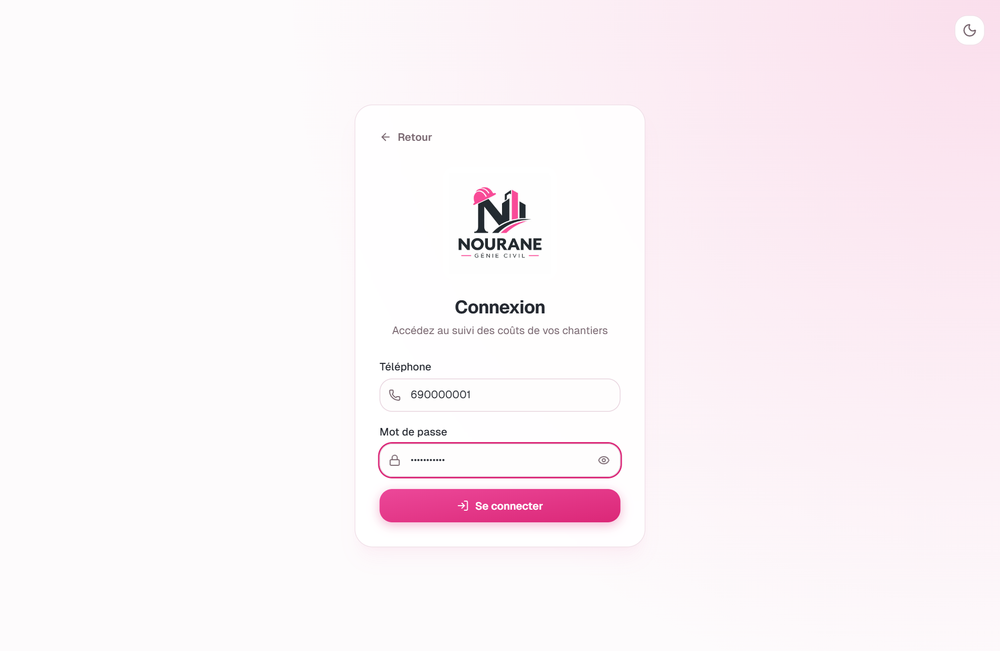
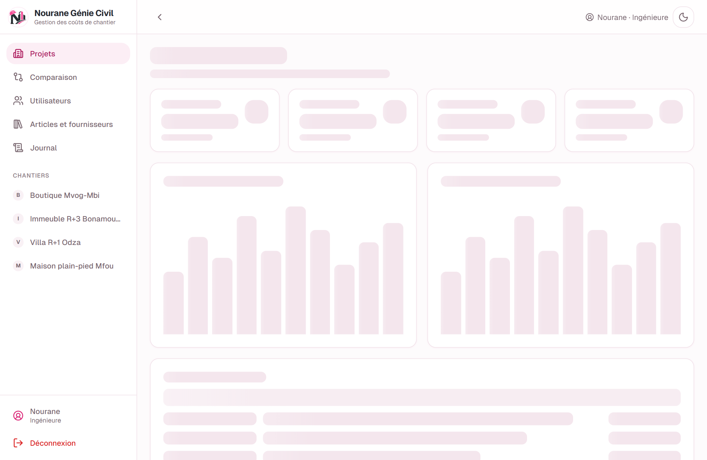
La liste des projets affiche, pour chacun, le budget consommé et les travaux réalisés en barres, le dépensé, le budget révisé, la fin prévue, le nombre d'alertes et de saisies en attente. Les quatre cartes du haut totalisent tous les projets.
Cliquez sur votre nom en bas du menu. La page « Mon compte » rappelle votre nom, votre rôle, votre téléphone (votre identifiant) et votre dernière connexion.
Changer mon mot de passe : le mot de passe actuel, puis le nouveau deux fois. Il doit compter au moins 8 caractères.
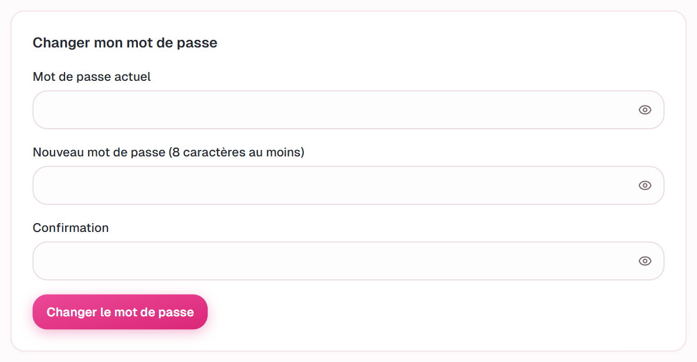
Seule l'ingénieure crée les comptes. Ouvrez Utilisateurs dans le menu.
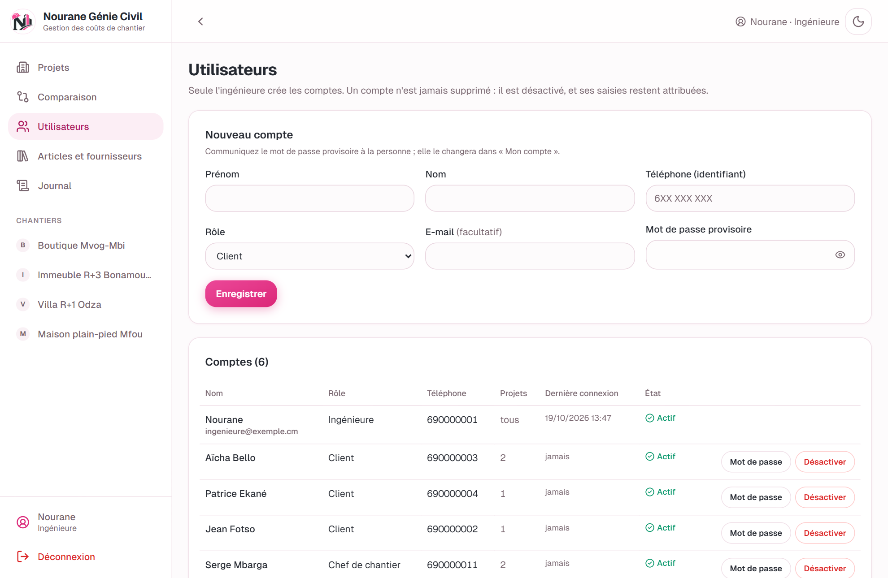
| Champ | Ce qu'il faut savoir |
|---|---|
| Prénom, Nom | Ils s'affichent dans l'application et dans le journal. |
| Téléphone (identifiant) | 8 à 12 chiffres ; il sert à se connecter et doit être unique. |
| Rôle | Client, Chef de chantier ou Ingénieure. Un compte n'a qu'un rôle. |
| Facultatif. | |
| Mot de passe provisoire | 8 caractères au moins. Communiquez-le à la personne : elle le changera dans « Mon compte ». |
La colonne Projets indique combien de projets suit un client ou dirige un chef de chantier ; Dernière connexion montre qui utilise l'application.
Dans Projets, cliquez sur Nouveau projet. Le compte du client doit exister avant : créez-le d'abord dans Utilisateurs.
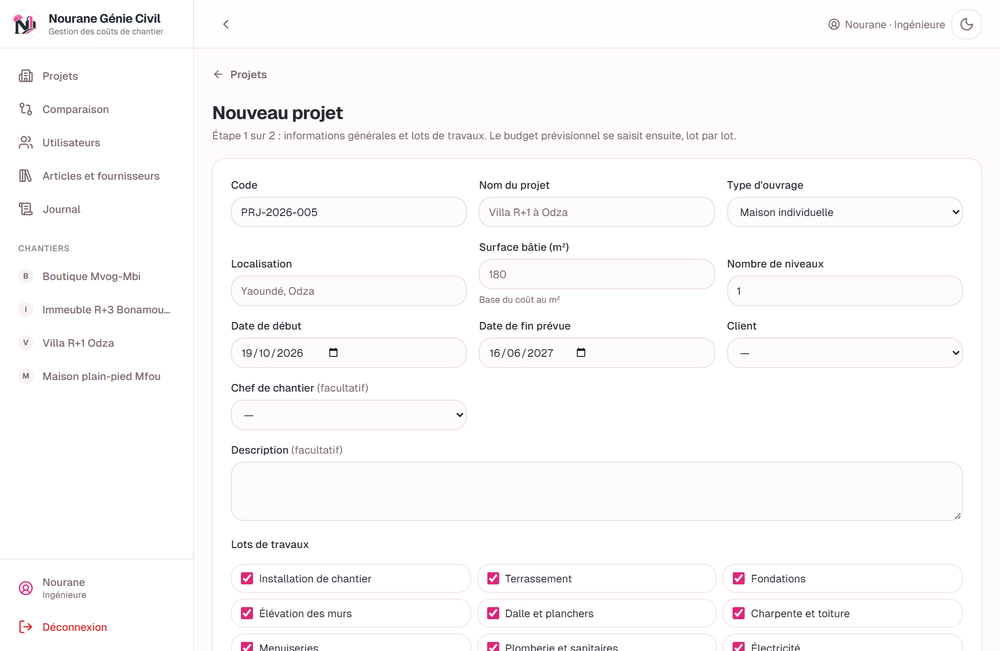
| Champ | Ce qu'il faut savoir |
|---|---|
| Code | Proposé automatiquement (PRJ-année-numéro) ; vous pouvez le changer. Il est unique. |
| Type d'ouvrage | Maison individuelle, immeuble, bâtiment commercial, bâtiment public ou autre ouvrage. |
| Surface bâtie (m²) | La base du coût au m², qui rend les projets comparables entre eux. |
| Dates de début et de fin prévue | Elles servent au délai écoulé et à la prévision du coût final. |
| Client | Obligatoire : il suivra le projet. |
| Chef de chantier | Facultatif à la création ; il pourra être désigné plus tard dans Paramètres. |
| Lots de travaux | Onze lots de bâtiment sont cochés par défaut, de l'installation de chantier aux finitions. Décochez ceux qui ne servent pas et ajoutez les vôtres dans « Autres lots », un par ligne. |
Créer le projet et saisir le budget enregistre le projet, au statut « En préparation », et ouvre son onglet Budget.
Le budget se saisit dans une grille : une ligne par lot, une colonne par catégorie de dépense (matériaux, main-d'œuvre, transport, location d'équipements, autres frais). Laissez vide ou à 0 une case sans objet. Le budget initial est la somme de la grille.
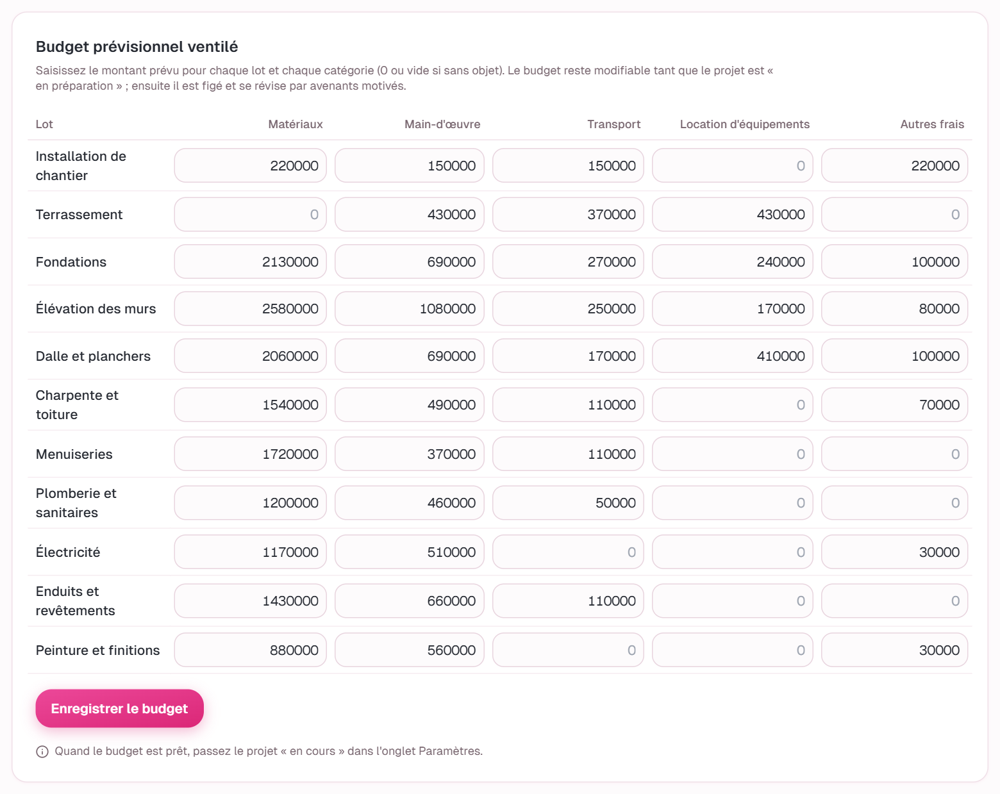
Quand le budget est prêt, ouvrez l'onglet Paramètres et passez le statut à En cours. Le budget initial est alors figé : il ne se modifie plus que par avenant (chapitre 7). Les autres informations du projet restent modifiables ; chaque changement est inscrit au journal avec l'ancienne et la nouvelle valeur.
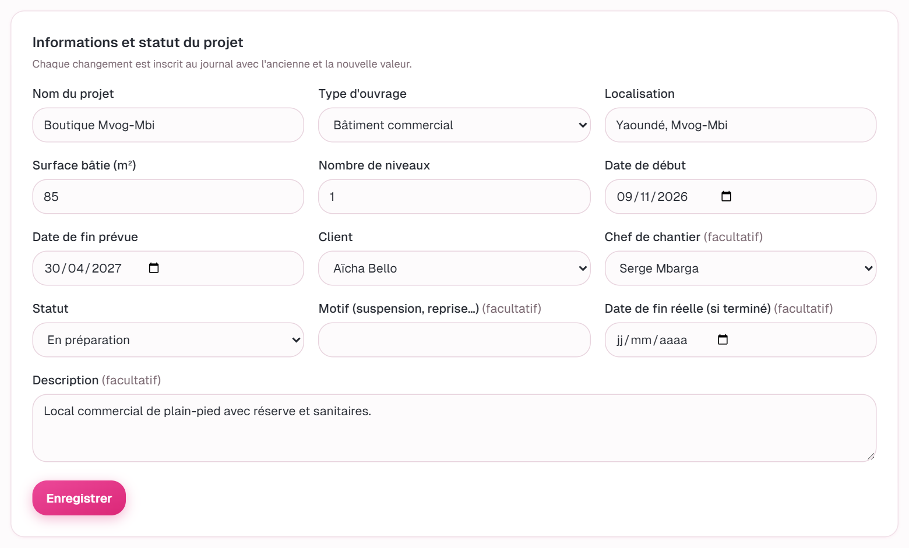
| Statut | Effet |
|---|---|
| En préparation | Le budget initial se saisit et se corrige librement. |
| En cours | Budget initial figé, révisable par avenants ; dépenses et avancement se saisissent. |
| Suspendu | Un motif est obligatoire ; les saisies restent possibles pour régulariser. |
| Terminé | Plus aucune dépense ni aucun relevé ; le projet reste consultable et exportable. |
Cliquez sur un projet : son tableau de bord s'ouvre. Sous le nom du projet, les onglets mènent aux dépenses, au budget, à l'avancement, aux versements, à l'analyse, au journal et aux paramètres. Une pastille rose sur un onglet compte les éléments qui attendent votre validation.
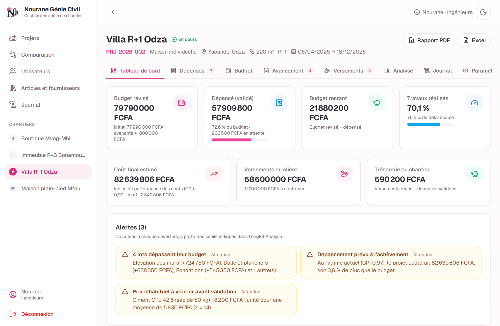
| Carte | Ce qu'elle mesure |
|---|---|
| Budget révisé | Budget initial + avenants. C'est la référence de tous les écarts. |
| Dépensé (validé) | Somme des dépenses validées, en FCFA et en % du budget révisé ; les dépenses en attente sont indiquées à part. |
| Budget restant | Budget révisé − dépensé. En rouge s'il est négatif : le budget est dépassé. |
| Travaux réalisés | Avancement global, chaque lot pesant selon son budget ; comparé au délai écoulé. |
| Coût final estimé | Ce que coûterait le projet achevé au rythme actuel (chapitre 10, valeur acquise). |
| Versements du client | Versements confirmés ; ceux à confirmer sont indiqués à part. |
| Trésorerie du chantier | Versements reçus − dépenses validées. Négative, elle signale qu'il faut un nouveau versement. |
Les alertes sont recalculées à chaque ouverture. Les critiques (rouge) passent avant celles qui demandent votre attention (orange) et les simples informations (bleu).
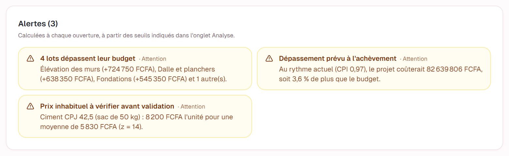
| Alerte | Quand elle se déclenche |
|---|---|
| Budget presque épuisé / dépassé | 80 % du budget révisé consommé (attention), puis 100 % (critique). |
| Poste dépassé, lots dépassés | Le dépensé d'une catégorie ou d'un lot dépasse son budget révisé. |
| Dépassement prévu à l'achèvement | Le coût final estimé dépasse le budget ; critique au-delà de 10 %. |
| Les dépenses vont plus vite que les travaux | Le % du budget consommé dépasse de plus de 10 points le % des travaux réalisés. |
| Prix inhabituel | Un prix unitaire s'écarte de plus de 2,5 écarts-types de la moyenne des achats validés du même article (dès 4 achats). Signalé avant validation quand la dépense est en attente. |
| Fonds insuffisants | Les dépenses validées dépassent les versements reçus du client. |
| Dépenses en attente | Des saisies attendent votre décision depuis plus de 7 jours. |
| Date de fin dépassée | La fin prévue est passée et le projet n'est pas terminé. |
| Justificatifs manquants | Plus de 20 % du montant dépensé n'a ni numéro de reçu ni photo. |
La courbe en S montre le coût cumulé des dépenses validées, jour après jour, et sa tendance prolongée en pointillé jusqu'à la fin prévue ; la ligne grise marque le budget révisé. L'anneau donne la part de chaque catégorie, et les barres comparent, par catégorie, le budget révisé (rose clair) au dépensé (rose, ou rouge en cas de dépassement).
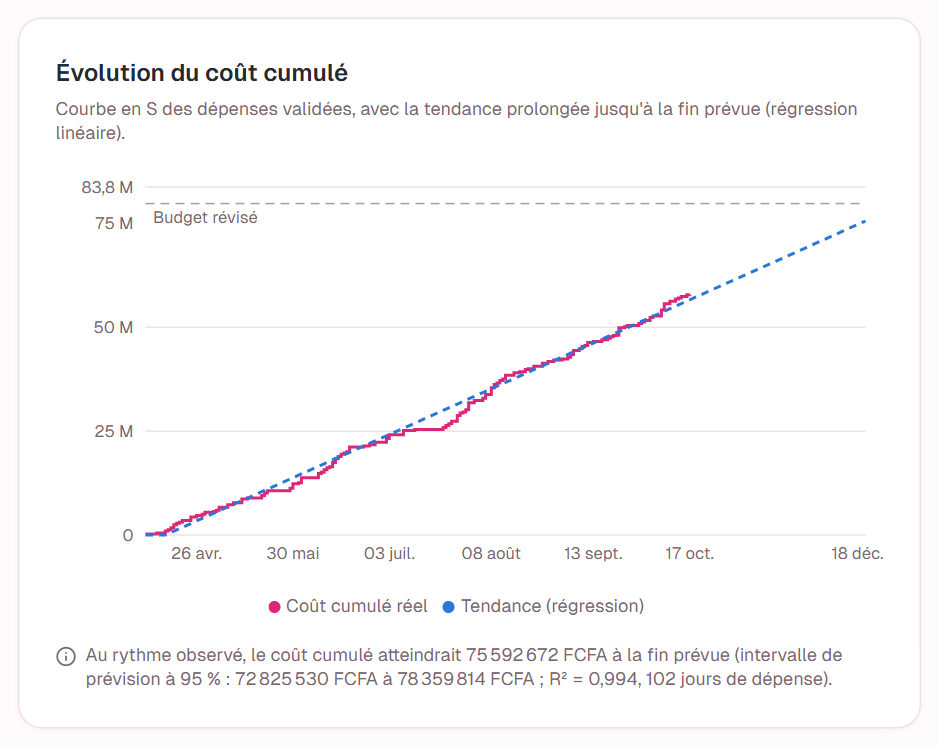
L'onglet Dépenses liste toutes les dépenses du projet, des plus récentes aux plus anciennes. Les filtres du haut cherchent par libellé ou numéro de reçu, par catégorie, par lot, par mois et par statut ; les totaux se recalculent sur la sélection.
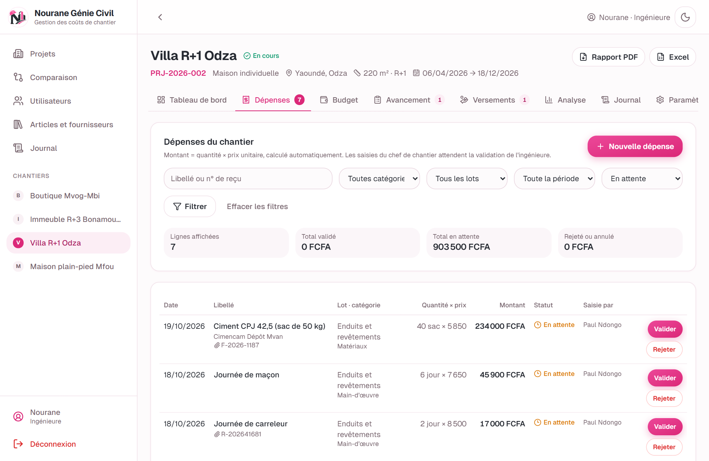
Nouvelle dépense ouvre le formulaire décrit au chapitre 4 du manuel du chef de chantier. Le montant n'est jamais saisi : il vaut quantité × prix unitaire, calculé pendant la frappe puis recalculé par le serveur. Vos propres dépenses sont validées d'office.
Sous le libellé, un trombone indique un justificatif (numéro de reçu ou photo), et la mention orange Prix inhabituel donne le score z et le prix moyen de l'article : vérifiez le reçu avant de valider.
Cliquez sur un libellé : la fiche donne la quantité, le prix, le fournisseur, le reçu, qui l'a saisie et qui l'a décidée, avec la date et l'heure. Voir la photo du reçu ouvre la photo (le lien reste valable 10 minutes). L'historique retrace chaque opération, avec l'avant et l'après d'une correction. Tant qu'elle est en attente, la dépense peut encore être corrigée.
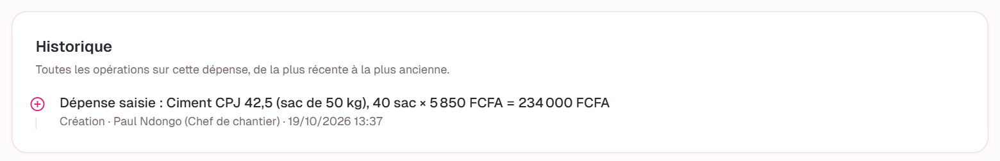
Une fois le projet lancé, l'onglet Budget montre la même grille lot × catégorie, avec dans chaque case le dépensé / budget révisé. Une case rouge signale un dépassement ; la dernière colonne donne le pourcentage consommé de chaque lot, et la ligne Total celui de chaque catégorie.
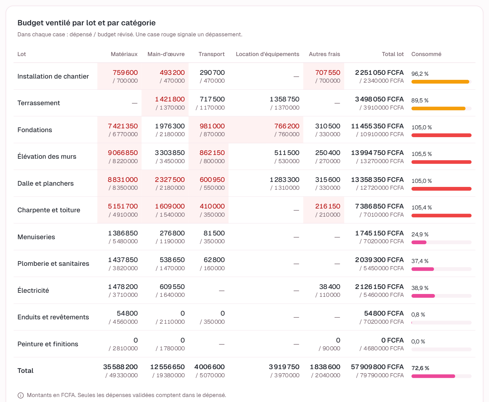
Une hausse de prix, un ouvrage ajouté à la demande du client : le budget d'une ligne se révise par avenant. Choisissez le lot, la catégorie, le sens (hausse ou baisse), le montant, la date et le motif, obligatoire. Le budget initial n'est jamais modifié : l'écart entre budget initial, budget révisé et dépensé reste mesurable. Une baisse ne peut pas rendre une ligne négative.
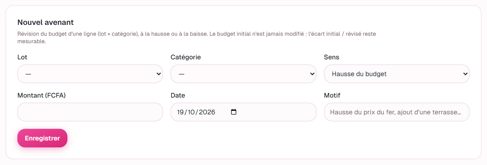
Le tableau Avenants garde toutes les révisions, et Ajouter un lot de travaux crée un lot oublié à la création.
Le chef de chantier déclare, lot par lot, le pourcentage cumulé réalisé à une date, avec une photo s'il le souhaite. Vous validez ou rejetez ces relevés dans l'onglet Avancement ; vos propres relevés sont validés d'office.
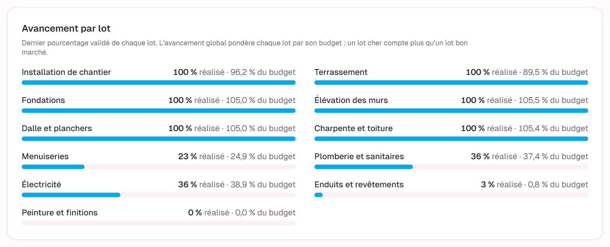
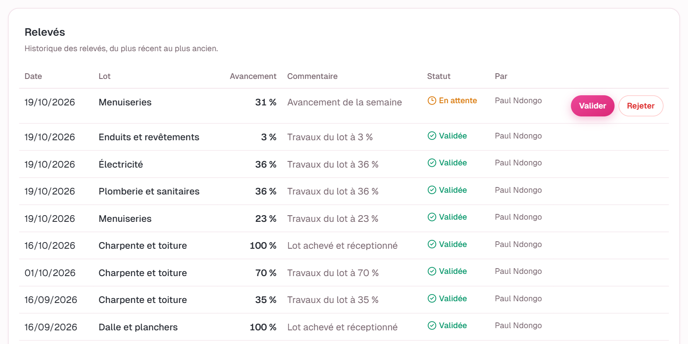
Le client déclare ses versements ; vous confirmez leur réception dans l'onglet Versements. Seuls les versements confirmés comptent dans la trésorerie. Vous pouvez aussi enregistrer vous-même un versement reçu : il est confirmé d'office.
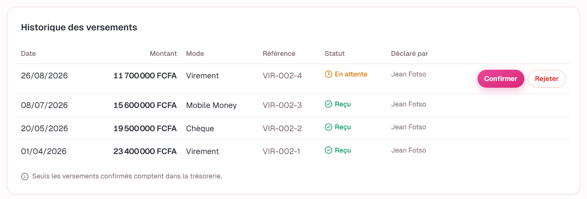
La barre « Financement du projet » donne la part du budget révisé déjà versée ; un message rouge prévient quand les dépenses validées dépassent les fonds reçus.
L'onglet Analyse porte sur les dépenses validées. Chaque section rappelle la période, l'unité et l'effectif sur lesquels elle porte.
Budget révisé, dépensé, écart (dépensé − révisé : positif, le poste dépasse), pourcentage consommé et part de chaque catégorie dans le coût total.
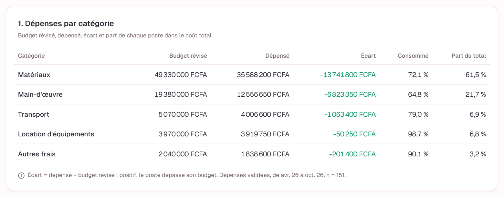
Les barres empilées donnent le montant validé de chaque mois, par catégorie. La prévision ajuste une droite de régression sur le coût cumulé :
coût cumulé = a × t + b, t en jours depuis le début ; coût prévu = a × (jour de fin prévue) + bLa pente a est le rythme de dépense en FCFA par jour, et R² la part de la variation du coût cumulé expliquée par le temps. L'intervalle de prévision à 95 % (loi de Student à n − 2 degrés de liberté) encadre le coût prévu. Il faut au moins 3 jours de dépenses validées, sur un projet non terminé. Hypothèse : le rythme reste constant jusqu'à la fin.
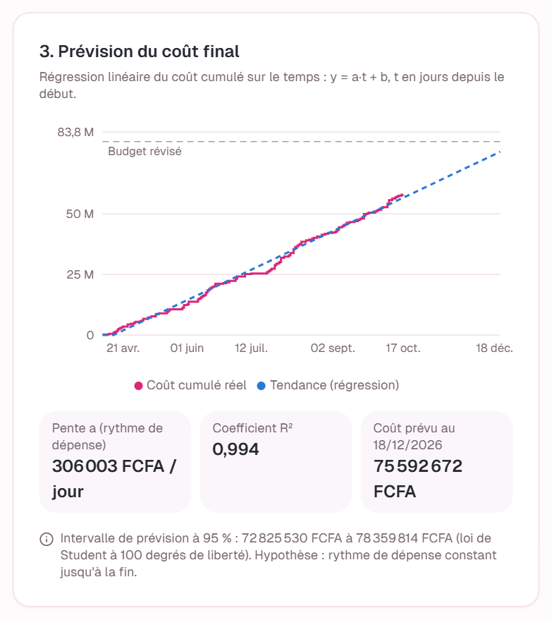
La méthode de la valeur acquise compare ce qu'ont coûté les travaux réalisés à ce qu'ils devaient coûter.
EV = Σ budget du lot × % réalisé · CPI = EV / coût réel · EAC = budget / CPI · VAC = budget − EACCPI inférieur à 1 : chaque franc dépensé produit moins d'un franc de travaux prévus, le projet dérive vers un dépassement. Le coût au m² est donné réel, budgété et estimé à l'achèvement.
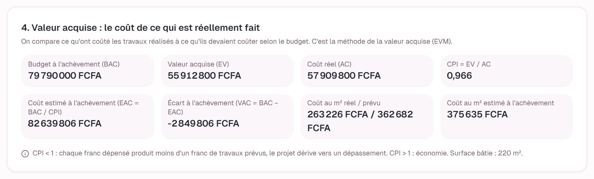
Sur le montant de chaque dépense validée : effectif, total, moyenne, médiane, écart-type, coefficient de variation (écart-type / moyenne), quartiles, minimum et maximum, et l'intervalle de confiance à 95 % de la dépense moyenne. Une moyenne nettement au-dessus de la médiane signale quelques grosses dépenses qui tirent la moyenne vers le haut.
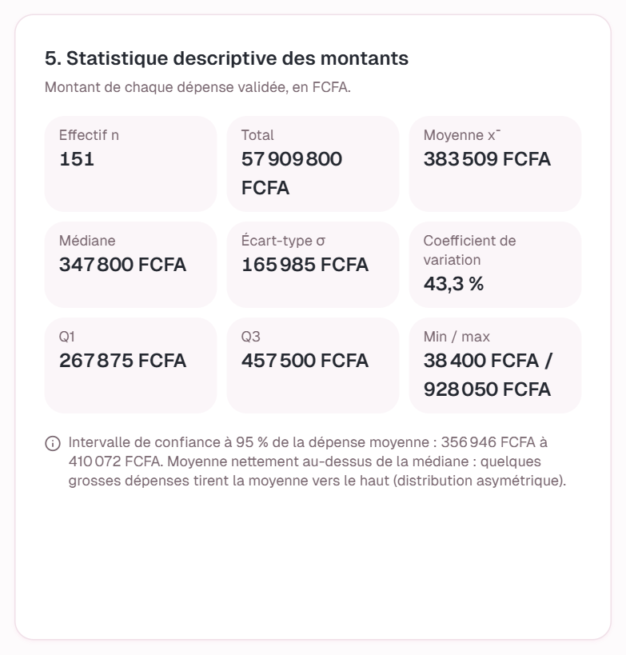
La boîte à moustaches de Tukey place Q1, la médiane et Q3 ; les points rouges sont les dépenses atypiques, au-delà de Q3 + 1,5 × (Q3 − Q1). L'histogramme répartit les montants en classes d'égale amplitude, leur nombre suivant la règle de Sturges k = 1 + log₂(n).
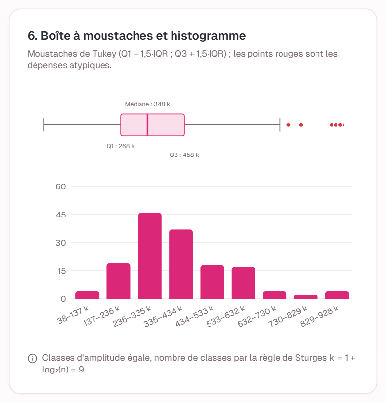
Les articles sont classés du plus coûteux au moins coûteux, avec leur part et leur part cumulée. La classe A regroupe les articles qui font ensemble 80 % du coût : ce sont eux qu'il faut négocier et surveiller en priorité. La classe B va jusqu'à 95 %, la classe C au-delà.
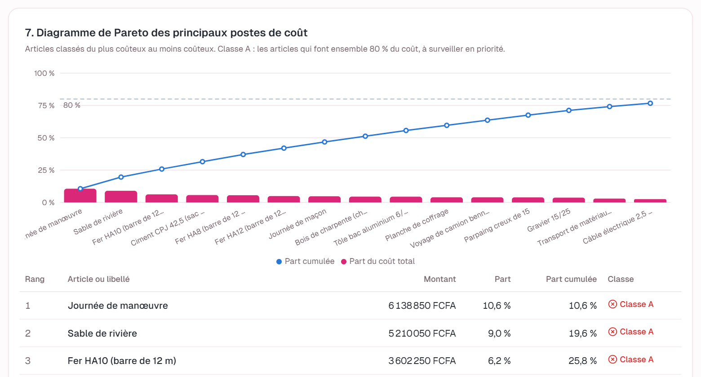
Pour chaque article : nombre d'achats, prix moyen, minimum, maximum, écart-type, coefficient de variation (sous 15 %, prix stable) et variation entre le premier et le dernier achat. Les prix inhabituels sont listés avec leur score z :
z = (prix − prix moyen de l'article) / écart-type ; inhabituel si |z| > 2,5L'écart-type retenu vaut au moins 2 % du prix moyen : sur un article au prix presque fixe, un écart de quelques francs donnerait sinon un z énorme. La dernière section répartit les dépenses par fournisseur.
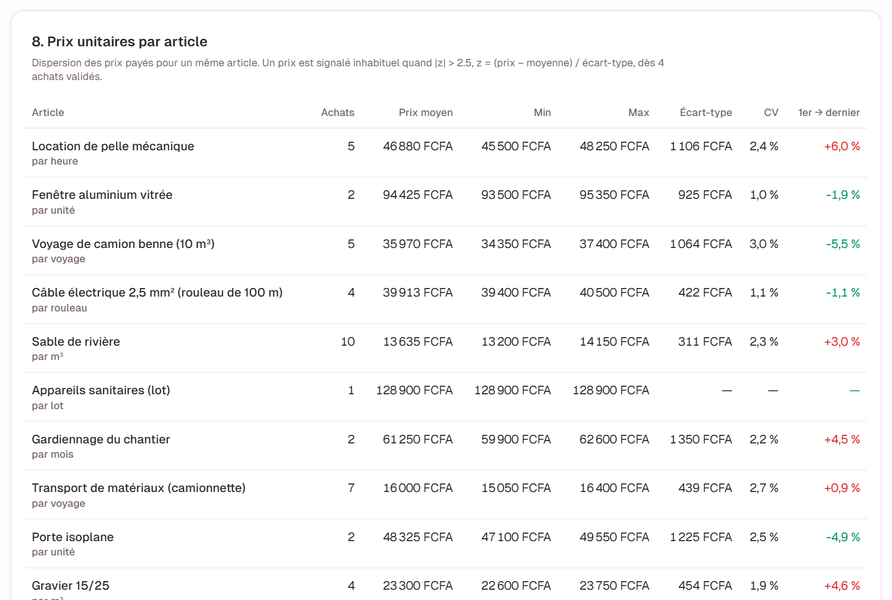
Comparaison, dans le menu, met tous les projets côte à côte : budget révisé, dépensé, pourcentages consommé et réalisé, CPI, coût final estimé et coût au m². En haut, la moyenne, l'écart-type et le coefficient de variation du coût au m² entre projets.
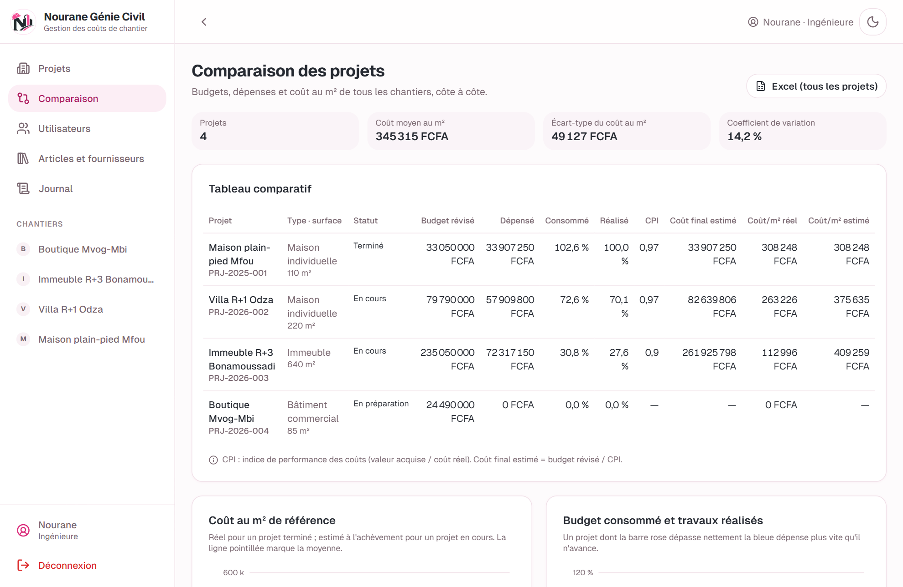
Le coût au m² de référence est le coût réel pour un projet terminé et le coût estimé à l'achèvement pour un projet en cours ; la ligne pointillée marque la moyenne. Les graphiques suivants comparent le budget consommé aux travaux réalisés, puis la structure des coûts de chaque projet par catégorie.
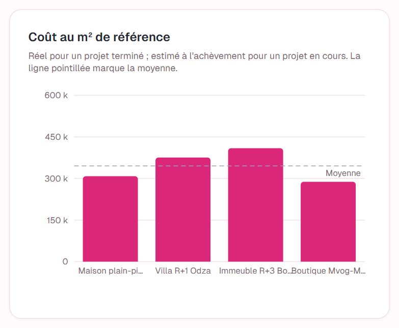
Excel (tous les projets) télécharge ce tableau comparatif.
En haut à droite de chaque projet, Rapport PDF et Excel téléchargent les résultats du projet. Le client a les mêmes boutons pour son projet. Chaque téléchargement est inscrit au journal.
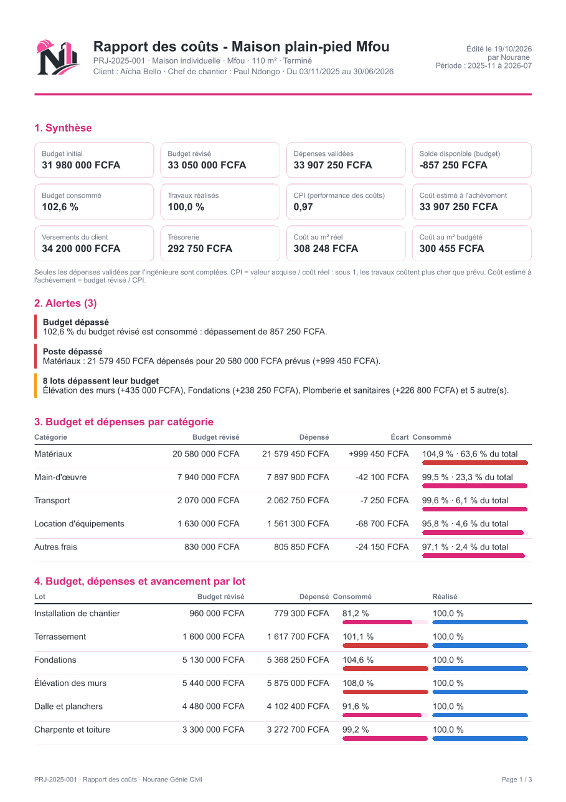
Les nombres restent des nombres : les calculs et les graphiques se refont dans le tableur.
| Feuille | Contenu |
|---|---|
| Synthèse | Les indicateurs du projet. |
| Budget | Chaque ligne lot × catégorie : initial, avenants, révisé, dépensé, écart, consommé. |
| Dépenses | Toutes les dépenses, avec leur statut, leur motif, leur auteur et leur décideur. |
| Par catégorie, Par mois | Les répartitions de l'analyse. |
| Pareto, Prix unitaires | Le classement ABC et la dispersion des prix. |
| Avancement, Versements | Les lots et les versements du client. |
| Journal | Toutes les opérations du projet (dans votre export seulement). |
Le catalogue est commun à tous les projets. Choisir un article lors d'une dépense regroupe les achats du même produit : c'est ce qui permet de suivre l'évolution des prix et de repérer un prix anormal. Les chefs de chantier peuvent ajouter des articles et des fournisseurs ; vous seule pouvez les retirer (ils ne sont plus proposés) ou les remettre.
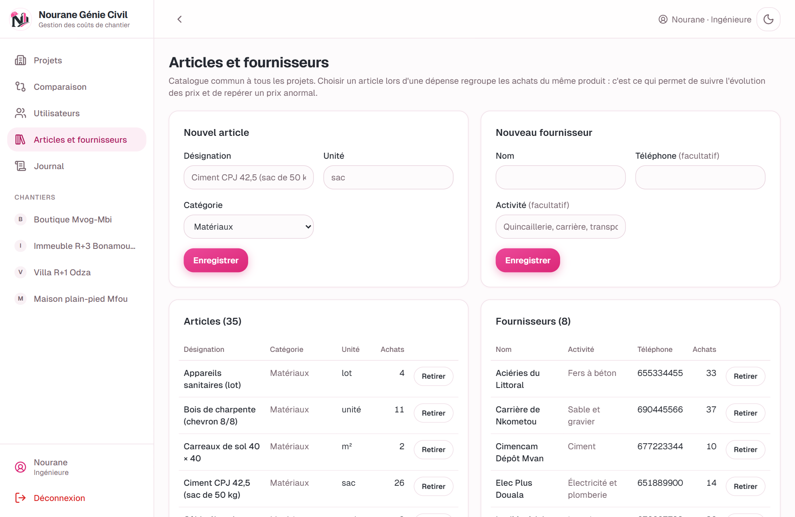
Le Journal du menu retrace toutes les opérations, sur tous les projets : connexions, créations, corrections (avec l'ancienne et la nouvelle valeur), validations, rejets, annulations, avenants, exports, gestion des comptes. Filtrez par opération ou par utilisateur. Chaque projet a aussi son journal, dans l'onglet du même nom. Le journal ne peut être ni modifié ni effacé.
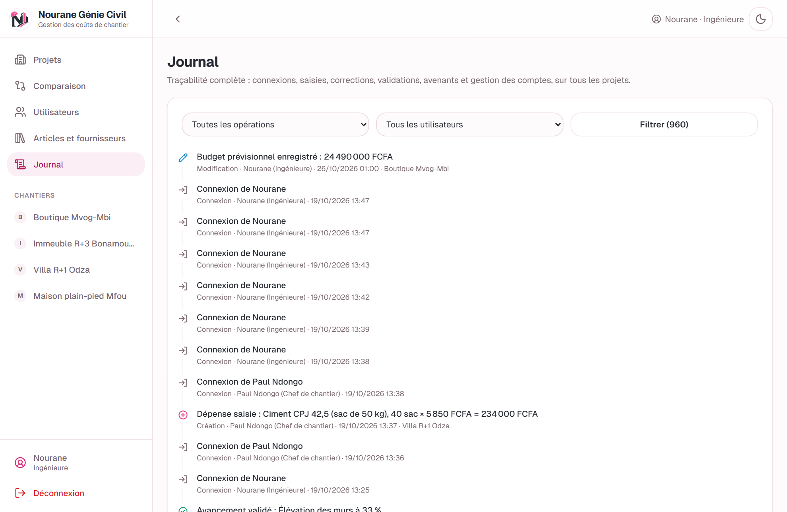
Ouvrez l'adresse de l'application dans le navigateur du téléphone, puis Connexion. Saisissez votre numéro de téléphone et le mot de passe remis par l'ingénieure. L'œil à droite du champ affiche ce que vous tapez. Une session dure 12 heures.
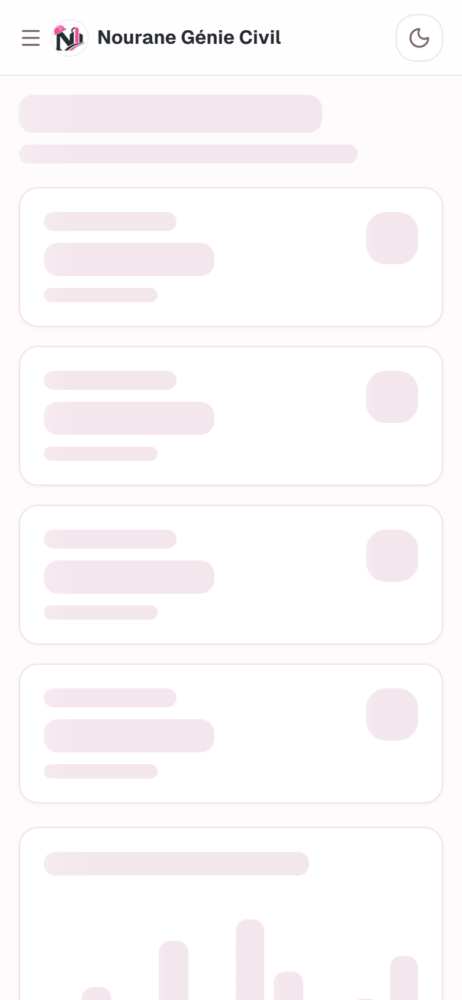
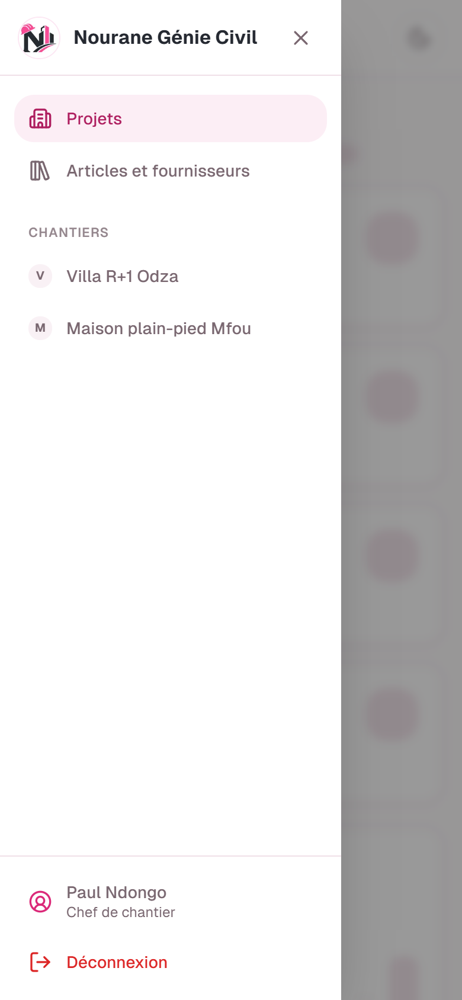
Votre nom, en bas du menu, ouvre « Mon compte ». À la première connexion, remplacez le mot de passe provisoire : le mot de passe actuel, puis le nouveau deux fois, 8 caractères au moins.
Touchez un chantier : son tableau de bord s'ouvre. Les onglets, sous le nom du chantier, mènent aux Dépenses, à l'Avancement et au Budget ; faites-les glisser du doigt pour les voir tous.
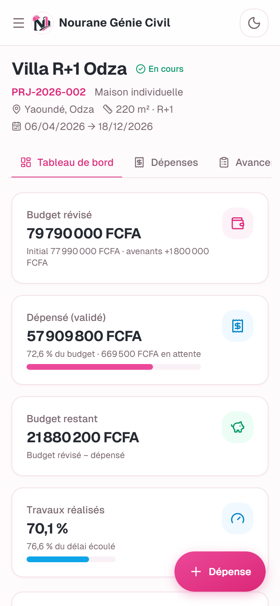
Le bouton rose + Dépense, en bas à droite, reste sous le pouce sur toutes les pages du chantier : c'est le chemin le plus court vers une nouvelle saisie.
Touchez + Dépense (ou, sur ordinateur, Nouvelle dépense dans l'onglet Dépenses).
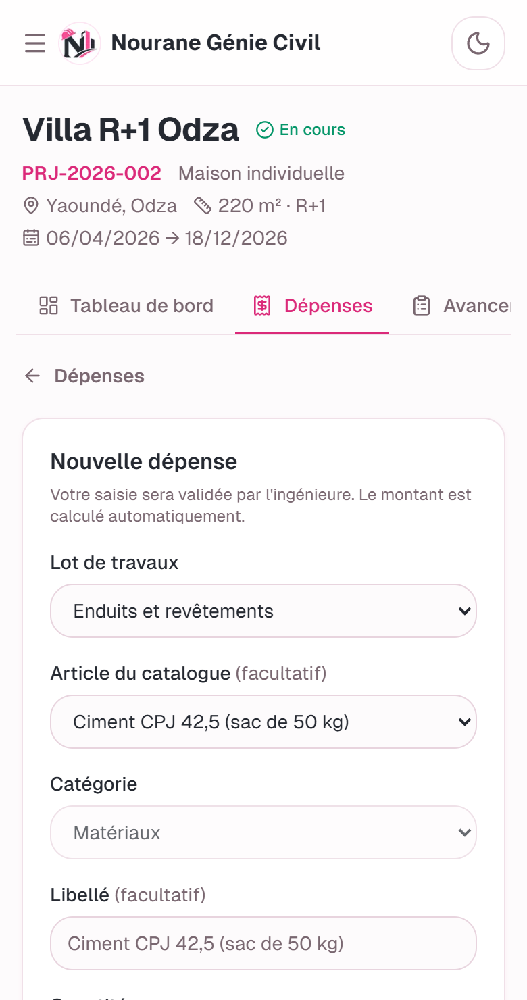
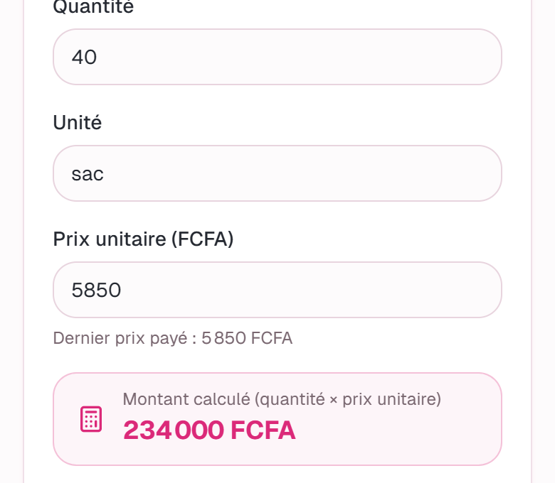
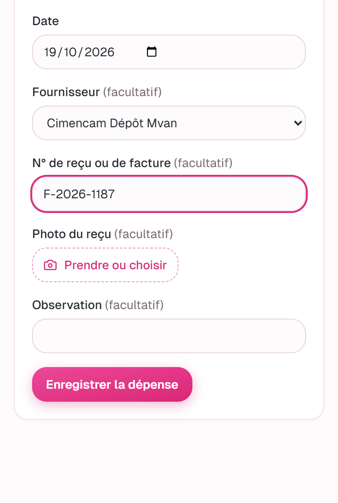
| Champ | Ce qu'il faut savoir |
|---|---|
| Lot de travaux | Le lot auquel la dépense est imputée : fondations, élévation des murs, toiture… |
| Article du catalogue | Facultatif, mais conseillé pour les achats courants (ciment, fer, sable, journée de maçon…). Il remplit seul la catégorie, l'unité et le dernier prix payé, et permet de comparer les prix d'un achat à l'autre. Choisissez « Autre (libellé libre) » pour un achat hors catalogue. |
| Catégorie | Matériaux, main-d'œuvre, transport, location d'équipements ou autres frais. |
| Libellé | Obligatoire sans article : par exemple « journées de coffreur ». |
| Quantité, unité | 40 sacs, 2 m³, 6 jours, 3 voyages… Les décimales s'écrivent avec une virgule. |
| Prix unitaire (FCFA) | Le prix d'une unité, tel qu'il figure sur le reçu. |
| Date | Le jour de la dépense ; elle ne peut pas être dans le futur. |
| Fournisseur, n° de reçu | Facultatifs, mais le numéro du reçu (ou sa photo) justifie la dépense. |
| Photo du reçu | Facultative. Prendre ou choisir ouvre l'appareil photo ; la photo est réduite automatiquement avant l'envoi. |
Enregistrer la dépense : un message vert confirme l'enregistrement et le formulaire se vide, prêt pour la saisie suivante. Si un champ manque, un message rouge l'indique et ce que vous avez tapé reste en place.
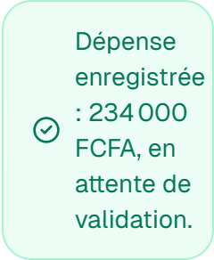
L'onglet Dépenses liste toutes les dépenses du chantier, avec leur statut. Les filtres retrouvent une dépense par libellé, numéro de reçu, catégorie, lot, mois ou statut.
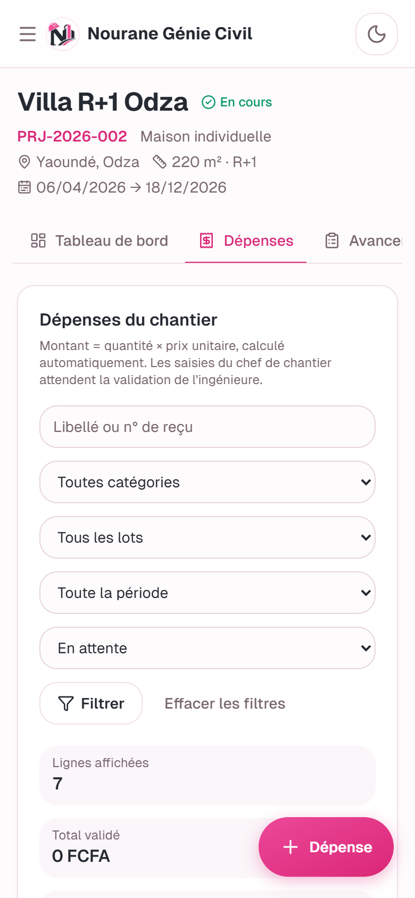
| Statut | Ce que cela veut dire |
|---|---|
| En attente | L'ingénieure ne l'a pas encore examinée. Vous pouvez encore la corriger ou la retirer. |
| Validée | Elle compte dans le dépensé ; le client la voit. Elle ne se modifie plus. |
| Rejetée | L'ingénieure l'a refusée ; son motif s'affiche sous le libellé. Corrigez le problème et saisissez-la de nouveau. |
| Annulée | Retirée, ou annulée par l'ingénieure ; elle reste visible, barrée, avec son motif. |
Touchez le libellé de la dépense : sa fiche s'ouvre, avec le formulaire « Corriger la saisie ». Modifiez ce qui est faux, puis Enregistrer les corrections. L'ancienne et la nouvelle valeur sont gardées dans l'historique, en bas de la fiche.
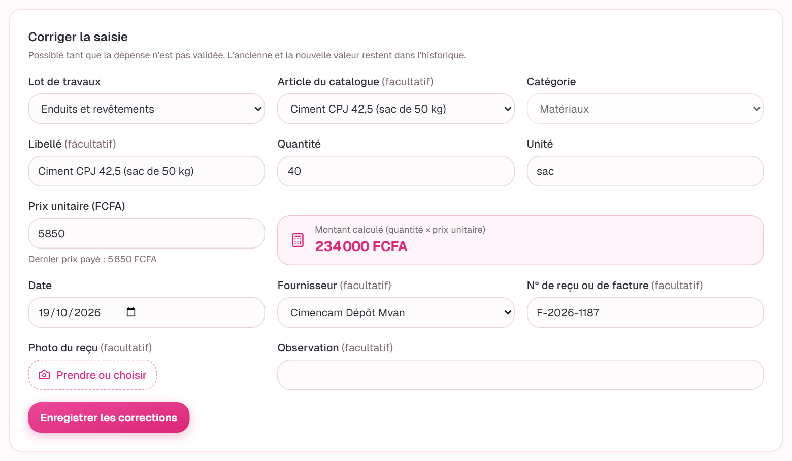
Une dépense saisie par erreur et encore en attente se retire avec le bouton Retirer de la liste ; l'application vous demande pourquoi. Elle reste visible, barrée.
L'onglet Avancement montre, pour chaque lot, le pourcentage réalisé validé par l'ingénieure. Pour le mettre à jour, remplissez Nouveau relevé d'avancement.
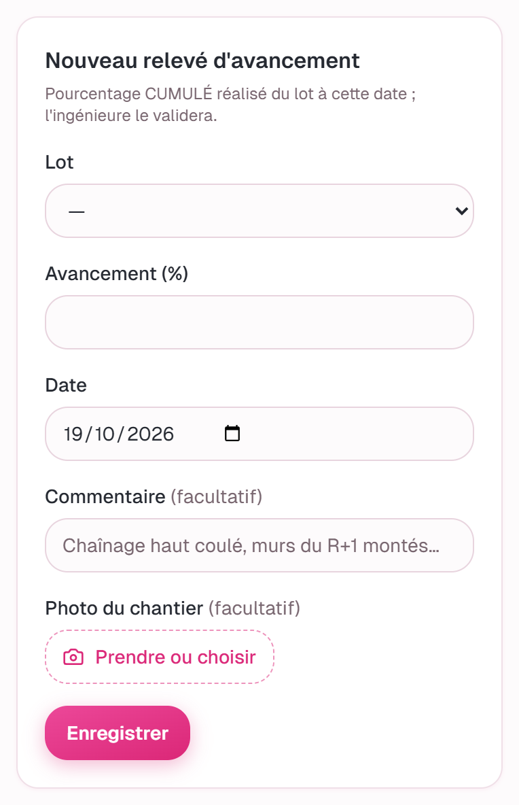
Le relevé attend la validation de l'ingénieure ; une fois validé, il fixe l'avancement du lot.
Si un produit ou un fournisseur manque dans les listes du formulaire de dépense, ajoutez-le : menu Articles et fournisseurs.
Ouvrez l'adresse de l'application, puis Connexion. Saisissez votre numéro de téléphone et le mot de passe remis par l'ingénieure. L'œil à droite du champ affiche ce que vous tapez. Une session dure 12 heures.
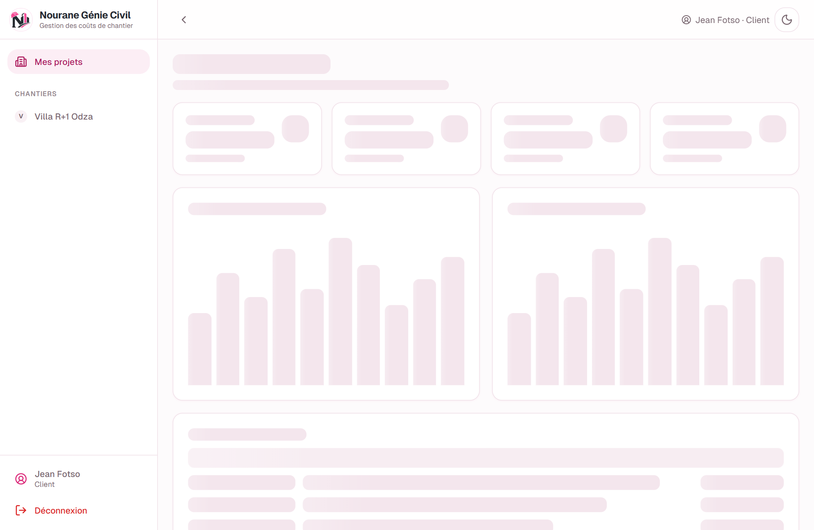
Chaque projet affiche le budget consommé et les travaux réalisés, en barres, le montant dépensé, le budget, la fin prévue, le chef de chantier et ce que vous avez déjà versé. Touchez un projet pour l'ouvrir. Sur téléphone, le menu s'ouvre avec le bouton ☰ en haut à gauche.
Votre nom, en bas du menu, ouvre « Mon compte ». À la première connexion, remplacez le mot de passe provisoire : le mot de passe actuel, puis le nouveau deux fois, 8 caractères au moins.
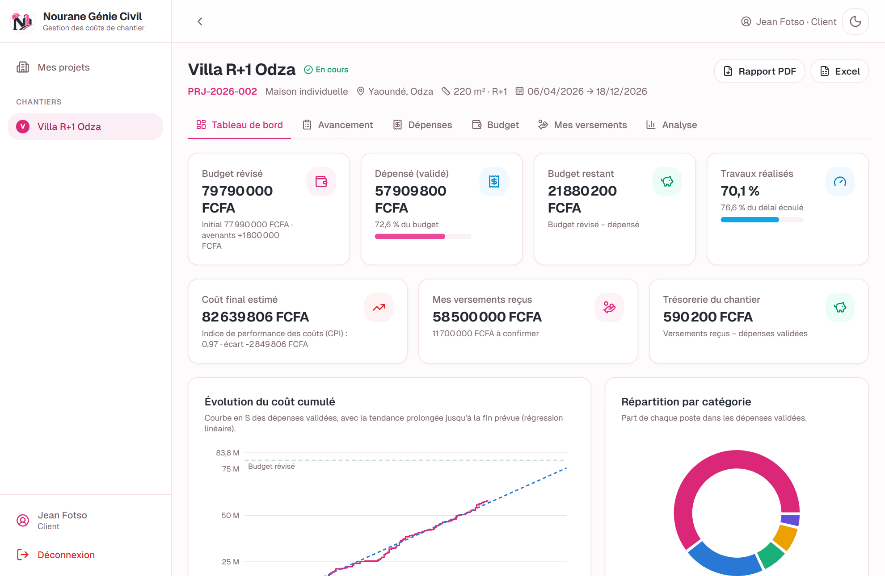
| Carte | Ce qu'elle vous dit |
|---|---|
| Budget révisé | Le budget prévu au départ, plus les révisions décidées en cours de chantier (avenants). |
| Dépensé (validé) | Les dépenses validées par l'ingénieure, en FCFA et en % du budget. |
| Budget restant | Ce qu'il reste à dépenser. En rouge s'il est dépassé. |
| Travaux réalisés | L'avancement du chantier, comparé au temps écoulé depuis le début. |
| Coût final estimé | Ce que coûterait le projet achevé au rythme actuel des dépenses et des travaux. |
| Mes versements reçus | Vos versements confirmés par l'ingénieure ; ceux à confirmer sont indiqués à part. |
| Trésorerie du chantier | Vos versements moins les dépenses validées. Négative, elle signale qu'un nouveau versement est nécessaire. |
La courbe montre comment le coût cumulé a progressé jour après jour, et où il arriverait à la fin prévue ; l'anneau répartit les dépenses par catégorie ; les barres comparent le budget et le dépensé de chaque catégorie.
En haut à droite, Rapport PDF et Excel téléchargent les résultats du projet (chapitre 7).
L'onglet Avancement donne, lot par lot (terrassement, fondations, murs, toiture…), le pourcentage de travaux réalisé, validé par l'ingénieure. L'avancement global pondère chaque lot par son budget.
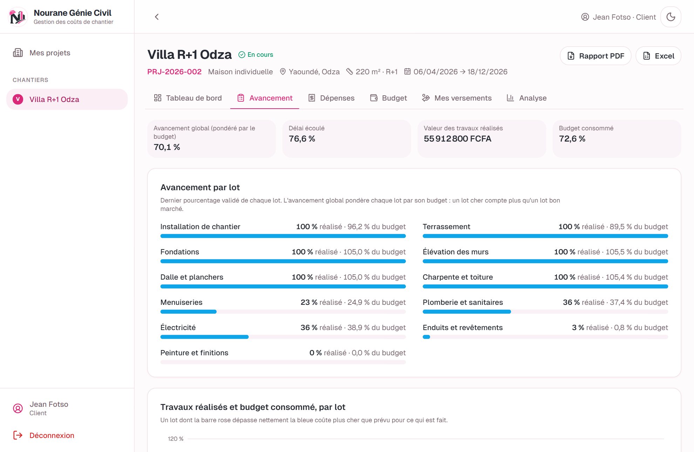
L'onglet Dépenses liste les dépenses validées du chantier : date, libellé, fournisseur, lot, catégorie, quantité × prix unitaire et montant. Les filtres retrouvent une dépense par libellé, numéro de reçu, catégorie, lot ou mois ; le total se recalcule sur la sélection.
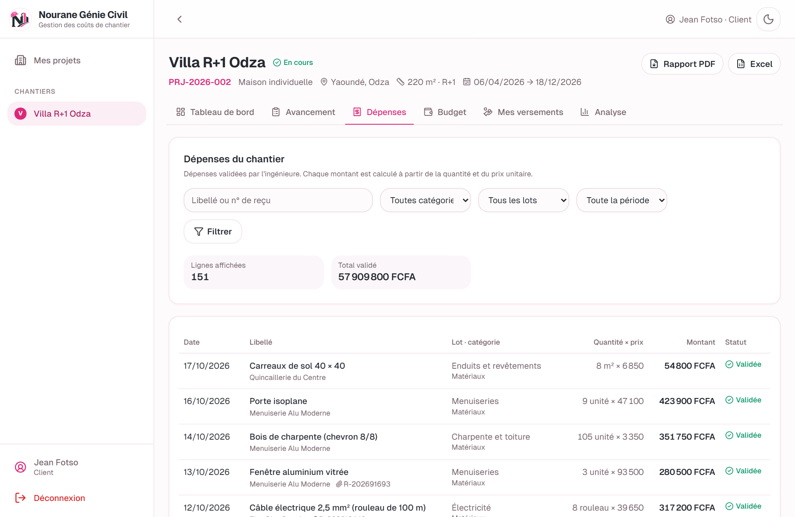
L'onglet Budget montre le budget par lot et par catégorie, avec dans chaque case le dépensé et le budget prévu. Une case rouge signale un poste dépassé. Le tableau des avenants, en bas de page, donne chaque révision du budget et son motif.
Après chaque versement de fonds à l'ingénieure, déclarez-le dans l'onglet Mes versements : montant, date, mode de paiement (espèces, virement, Mobile Money ou chèque) et référence de l'opération.
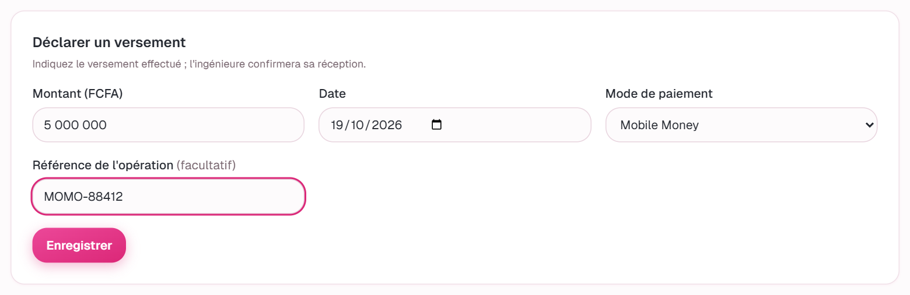
L'onglet Analyse présente les résultats statistiques de votre projet : dépenses par catégorie et par mois, prévision du coût final, valeur des travaux réalisés, dispersion des montants, principaux postes de coût et évolution des prix. Le manuel de l'ingénieure en explique les calculs.
La lune, en haut à droite, passe l'application en mode sombre ; le soleil revient au mode clair. Votre choix est retenu sur l'appareil.
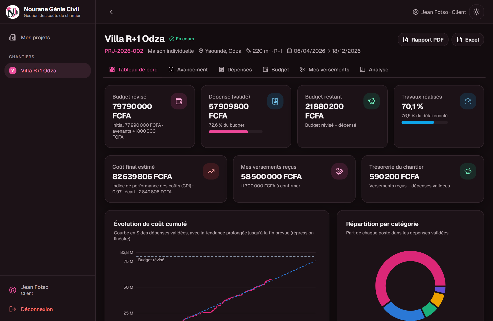